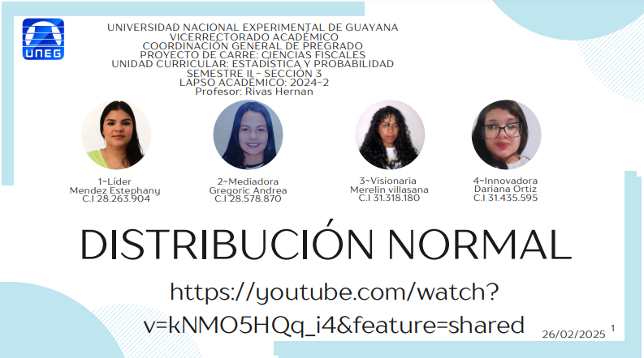
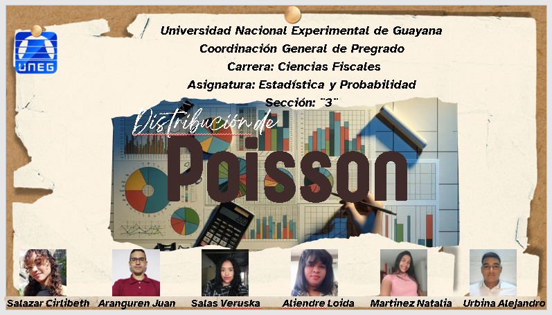
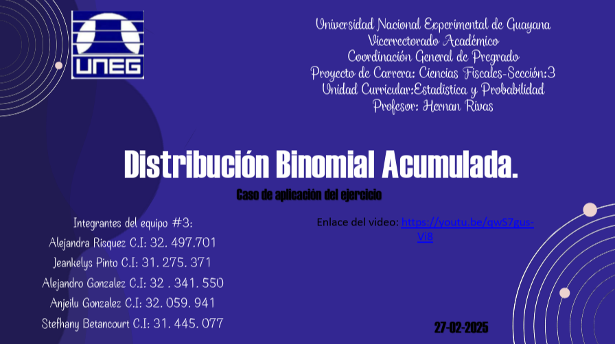
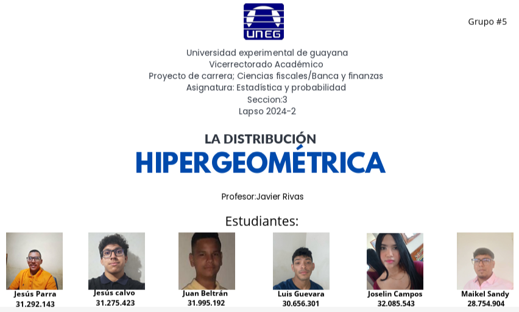
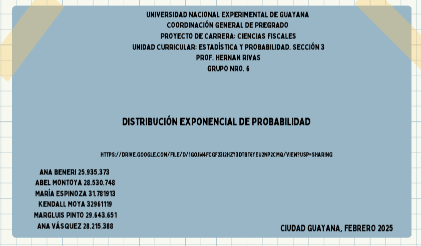
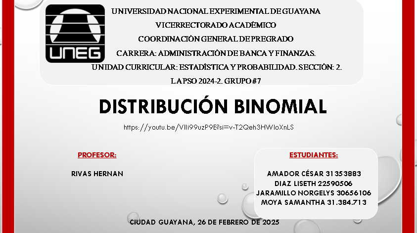
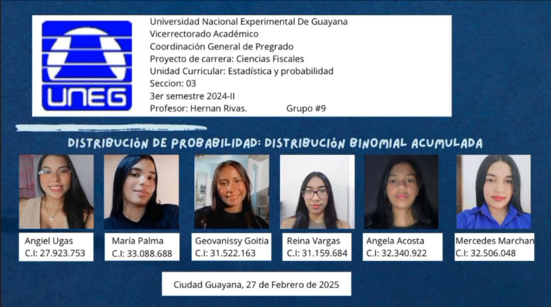
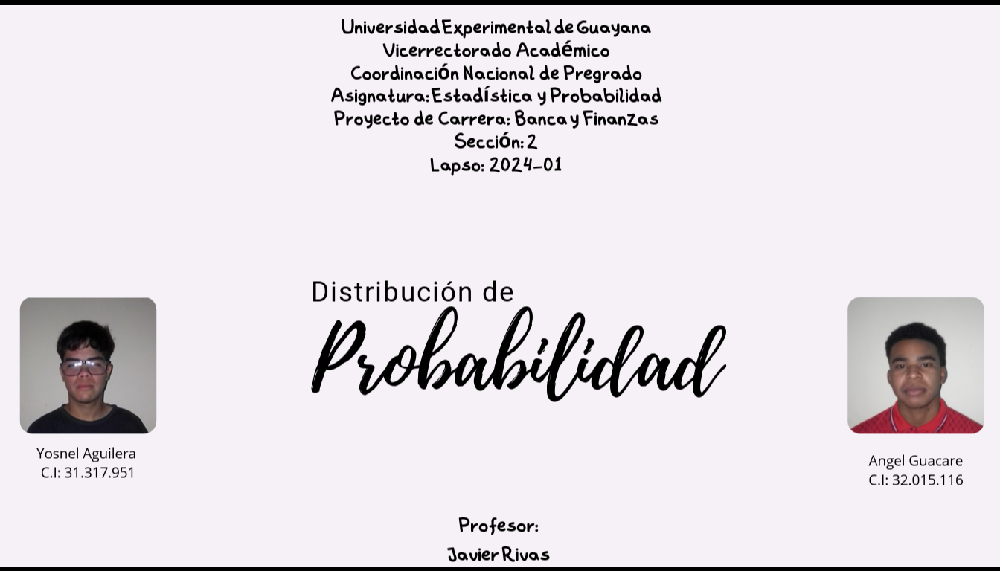

Grupo #1: Mujeres del Impuesto

Grupo #2: Guardianes del IVA

Grupo #3: Consultores fiscales y estadísticos

Grupo #5: Asesores Fiscales

Grupo #6: Mujeres del Impuesto

Grupo #7: Distribuidores del Riesgo

Grupo #8: Dios mío sálvame
Grupo #9: Las Contadoras

Grupo #11: Los Resagados
